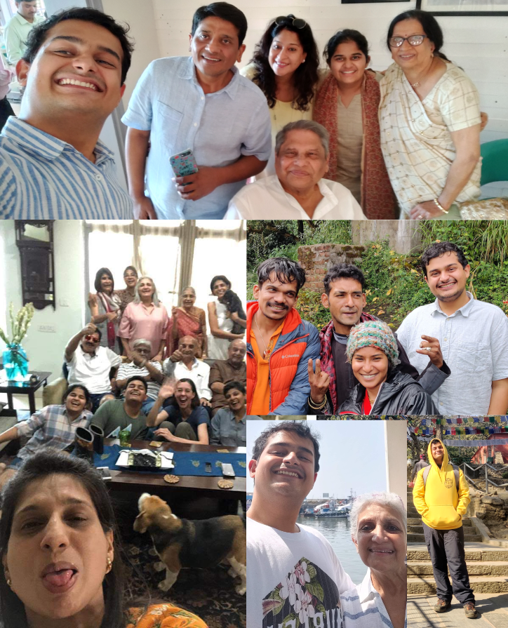

Introducing Madhav, your next hire at Google
His outlook toward life is that of wonder and curiosity. He challenges himself to learn something new every day, not necessarily in the purview of Computer Science. He can adapt to his environment and learn new skills as needed. His interests include Psychology, Medicine, Neurobiology, Physics, Material Science, Film Making, Game Design, digitally rendered artwork, 3D graphics, VFX and CGI, The study of Hindustani Classical Music (Especially Tabla, Sarod and renditions by Ustad Ajmad Ali Khan), Rock music of the 70s, and playing the violin.

He enjoys spending time with his zany family. He loves to cook, travel to new destinations, and experience different cultures.